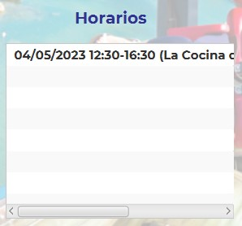
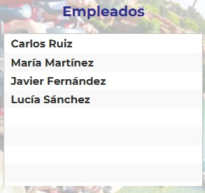

¡Asigna a un empleado el horario!
Pasos a seguir para asignar un horario a un empleado
En esta pantalla, puedes asignar un horario o varios a uno o varios trabajadores a la vez. Sólo tendrás que escoger los horarios de una lista mediante un click de ratón y seleccionar las personas que realizarán ese horario con otro click de ratón.
1. Seguir los 3 primeros pasos de la pantalla Crear
En este paso repetimos los 3 primeros pasos del apartado crear. De forma resumida primero tendrás que seleccionar el area de trabajo, la zona deseada y la fecha donde están los horarios creados.
2. Seleccionar el horario
Si en esa fecha hay horarios creados previamente, saldrá un listado con todos esos horarios los cuales podrás escoger de forma única o también múltiple. Para hacerlo
de forma múltiple, tendrás que apretar Ctrl+click. De esta forma los horarios seleccionados resaltarán en color azul Team Time, para que puedas visualizarlo
de forma rápida y fácil.
Si por otra parte, no hay horarios asignados, aparecerá un mensaje diciendo "Sin horarios asignados".
3. Seleccionar los empleado
Si hay horarios creados en esa zona de trabajo, te apareceran en la lista de la derecha un listado de todos los trabajadores que son de categoría "Aprendices" o "Trabajadores", para que puedas seleccionarlos de forma única o múltiple, de la misma forma que los horarios.
4. Asignar

texto
5. Borrar

texto
¡Ya puedes asignar los horarios a todos los trabajadores de tu plantilla y así hacer una buena planificación de tu zona!